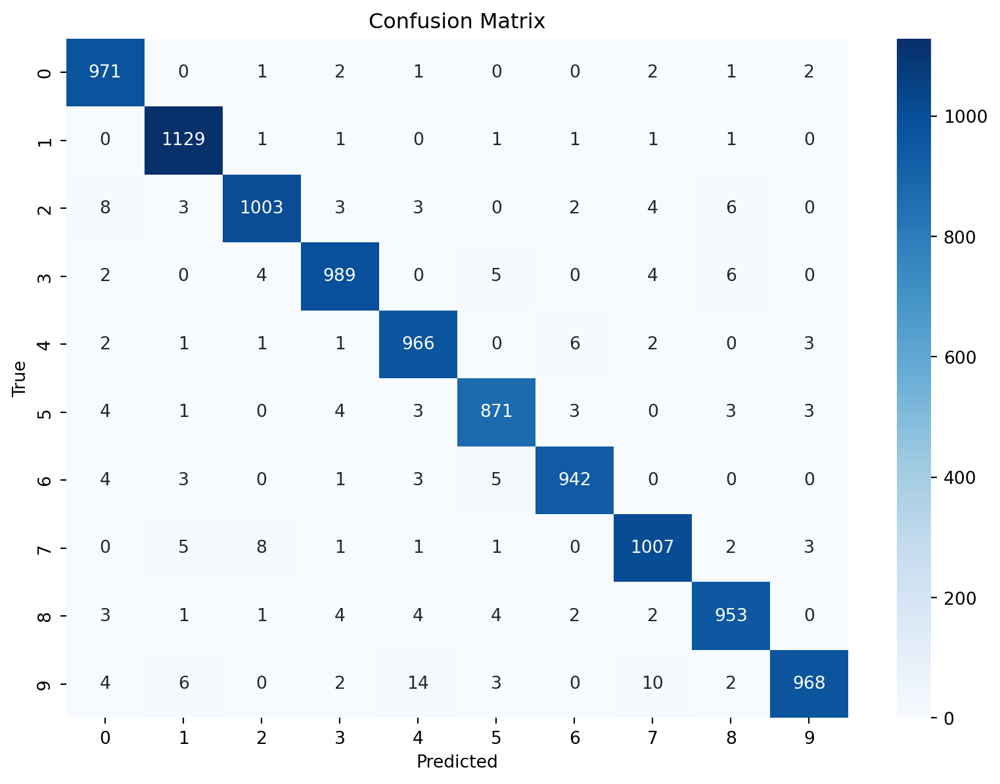

import torch
import torch.nn as nn
import torchquantum as tq
import torchvision
import torchvision.transforms as transforms
import torch.optim as optim
import matplotlib.pyplot as plt
import seaborn as sns
from sklearn.metrics import confusion_matrix
import torch.nn.functional as Fqnn-cv-qsite
# Load MNIST dataset
transform = transforms.Compose([transforms.ToTensor()])
train_dataset = torchvision.datasets.MNIST(root='./data', train=True, download=True, transform=transform)
test_dataset = torchvision.datasets.MNIST(root='./data', train=False, download=True, transform=transform)
# Define data loaders
batch_size = 64
train_loader = torch.utils.data.DataLoader(dataset=train_dataset, batch_size=batch_size, shuffle=True)
test_loader = torch.utils.data.DataLoader(dataset=test_dataset, batch_size=batch_size, shuffle=False)
# Define a custom quantum layer with parameters
class QuantumLayer(nn.Module):
def __init__(self, input_size, output_size):
super(QuantumLayer, self).__init__()
# This is a placeholder; the actual quantum layer implementation may differ
self.fc = nn.Linear(input_size, output_size)
def forward(self, x):
# Apply some operations and return
return self.fc(x)
# Define the quantum neural network model
class QuantumNeuralNetwork(nn.Module):
def __init__(self):
super(QuantumNeuralNetwork, self).__init__()
self.q_layer1 = QuantumLayer(28*28, 128) # Define custom quantum layer
self.q_layer2 = QuantumLayer(128, 10) # Define custom quantum layer
def forward(self, x):
x = self.q_layer1(x)
# Apply a quantum operation
# Note: Modify based on how torchquantum expects quantum operations to be applied
x = torch.relu(x)
x = self.q_layer2(x)
return x
# Initialize the model, loss function, and optimizer
model = QuantumNeuralNetwork()
criterion = nn.CrossEntropyLoss()
# Initialize the model
model = QuantumNeuralNetwork()
# Define the optimizer with a specific learning rate
optimizer = optim.SGD(model.parameters(), lr=0.05, momentum=0.9)
# Train the model
for epoch in range(10): # train for 10 epochs
for i, (images, labels) in enumerate(train_loader):
images = images.view(-1, 28*28) # flatten the images
optimizer.zero_grad()
outputs = model(images)
loss = criterion(outputs, labels)
loss.backward()
optimizer.step()
if i % 100 == 0:
print(f'Epoch {epoch+1}, Batch {i+1}, Loss: {loss.item()}')
# Evaluate the model
model.eval()
test_loss = 0
correct = 0
with torch.no_grad():
for images, labels in test_loader:
images = images.view(-1, 28*28)
outputs = model(images)
loss = criterion(outputs, labels)
test_loss += loss.item()
_, predicted = torch.max(outputs, 1)
correct += (predicted == labels).sum().item()
accuracy = correct / len(test_loader.dataset)
print(f'Test Loss: {test_loss / len(test_loader)}')
print(f'Test Accuracy: {accuracy:.2f}%')Epoch 1, Batch 1, Loss: 2.288099765777588
Epoch 1, Batch 101, Loss: 0.3159481883049011
Epoch 1, Batch 201, Loss: 0.3420783579349518
Epoch 1, Batch 301, Loss: 0.1895936280488968
Epoch 1, Batch 401, Loss: 0.35278838872909546
Epoch 1, Batch 501, Loss: 0.2610619068145752
Epoch 1, Batch 601, Loss: 0.13302923738956451
Epoch 1, Batch 701, Loss: 0.19004277884960175
Epoch 1, Batch 801, Loss: 0.16484005749225616
Epoch 1, Batch 901, Loss: 0.19410748779773712
Epoch 2, Batch 1, Loss: 0.1268109530210495
Epoch 2, Batch 101, Loss: 0.30571448802948
Epoch 2, Batch 201, Loss: 0.08373631536960602
Epoch 2, Batch 301, Loss: 0.2199314534664154
Epoch 2, Batch 401, Loss: 0.08536102622747421
Epoch 2, Batch 501, Loss: 0.041027478873729706
Epoch 2, Batch 601, Loss: 0.04469919949769974
Epoch 2, Batch 701, Loss: 0.07798943668603897
Epoch 2, Batch 801, Loss: 0.08364693075418472
Epoch 2, Batch 901, Loss: 0.12893901765346527
Epoch 3, Batch 1, Loss: 0.03497926890850067
Epoch 3, Batch 101, Loss: 0.025604771450161934
Epoch 3, Batch 201, Loss: 0.08356665819883347
Epoch 3, Batch 301, Loss: 0.01599741168320179
Epoch 3, Batch 401, Loss: 0.07620248198509216
Epoch 3, Batch 501, Loss: 0.03759605437517166
Epoch 3, Batch 601, Loss: 0.08331012725830078
Epoch 3, Batch 701, Loss: 0.09592567384243011
Epoch 3, Batch 801, Loss: 0.061507780104875565
Epoch 3, Batch 901, Loss: 0.11098724603652954
Epoch 4, Batch 1, Loss: 0.05818689614534378
Epoch 4, Batch 101, Loss: 0.06918291747570038
Epoch 4, Batch 201, Loss: 0.029523327946662903
Epoch 4, Batch 301, Loss: 0.041717130690813065
Epoch 4, Batch 401, Loss: 0.0976083055138588
Epoch 4, Batch 501, Loss: 0.018132325261831284
Epoch 4, Batch 601, Loss: 0.04666651040315628
Epoch 4, Batch 701, Loss: 0.06500569730997086
Epoch 4, Batch 801, Loss: 0.012028658762574196
Epoch 4, Batch 901, Loss: 0.17851383984088898
Epoch 5, Batch 1, Loss: 0.009146598167717457
Epoch 5, Batch 101, Loss: 0.018540063872933388
Epoch 5, Batch 201, Loss: 0.09087801724672318
Epoch 5, Batch 301, Loss: 0.032599907368421555
Epoch 5, Batch 401, Loss: 0.032275982201099396
Epoch 5, Batch 501, Loss: 0.024265313521027565
Epoch 5, Batch 601, Loss: 0.07824014127254486
Epoch 5, Batch 701, Loss: 0.07055875658988953
Epoch 5, Batch 801, Loss: 0.0442497618496418
Epoch 5, Batch 901, Loss: 0.028142446652054787
Epoch 6, Batch 1, Loss: 0.20632624626159668
Epoch 6, Batch 101, Loss: 0.1183379665017128
Epoch 6, Batch 201, Loss: 0.05767705664038658
Epoch 6, Batch 301, Loss: 0.07270310074090958
Epoch 6, Batch 401, Loss: 0.016020020470023155
Epoch 6, Batch 501, Loss: 0.0883546769618988
Epoch 6, Batch 601, Loss: 0.02136768400669098
Epoch 6, Batch 701, Loss: 0.18510769307613373
Epoch 6, Batch 801, Loss: 0.0713496059179306
Epoch 6, Batch 901, Loss: 0.026228711009025574
Epoch 7, Batch 1, Loss: 0.008920162916183472
Epoch 7, Batch 101, Loss: 0.0276971235871315
Epoch 7, Batch 201, Loss: 0.0019747153855860233
Epoch 7, Batch 301, Loss: 0.03597347438335419
Epoch 7, Batch 401, Loss: 0.026927120983600616
Epoch 7, Batch 501, Loss: 0.05569939687848091
Epoch 7, Batch 601, Loss: 0.04961194843053818
Epoch 7, Batch 701, Loss: 0.011999131180346012
Epoch 7, Batch 801, Loss: 0.019147302955389023
Epoch 7, Batch 901, Loss: 0.04401218518614769
Epoch 8, Batch 1, Loss: 0.030697252601385117
Epoch 8, Batch 101, Loss: 0.007027680519968271
Epoch 8, Batch 201, Loss: 0.010434912517666817
Epoch 8, Batch 301, Loss: 0.12288504838943481
Epoch 8, Batch 401, Loss: 0.039730630815029144
Epoch 8, Batch 501, Loss: 0.058142099529504776
Epoch 8, Batch 601, Loss: 0.0624447800219059
Epoch 8, Batch 701, Loss: 0.0017424375982955098
Epoch 8, Batch 801, Loss: 0.009535407647490501
Epoch 8, Batch 901, Loss: 0.015877151861786842
Epoch 9, Batch 1, Loss: 0.004276403225958347
Epoch 9, Batch 101, Loss: 0.0539056658744812
Epoch 9, Batch 201, Loss: 0.06793048977851868
Epoch 9, Batch 301, Loss: 0.003677004249766469
Epoch 9, Batch 401, Loss: 0.017131103202700615
Epoch 9, Batch 501, Loss: 0.005584270693361759
Epoch 9, Batch 601, Loss: 0.007832324132323265
Epoch 9, Batch 701, Loss: 0.09199176728725433
Epoch 9, Batch 801, Loss: 0.024681245908141136
Epoch 9, Batch 901, Loss: 0.007175299804657698
Epoch 10, Batch 1, Loss: 0.0027173408307135105
Epoch 10, Batch 101, Loss: 0.00888118240982294
Epoch 10, Batch 201, Loss: 0.007808873429894447
Epoch 10, Batch 301, Loss: 0.005816053599119186
Epoch 10, Batch 401, Loss: 0.005709032993763685
Epoch 10, Batch 501, Loss: 0.05467400699853897
Epoch 10, Batch 601, Loss: 0.010161708109080791
Epoch 10, Batch 701, Loss: 0.024333704262971878
Epoch 10, Batch 801, Loss: 0.08552942425012589
Epoch 10, Batch 901, Loss: 0.027601368725299835
Test Loss: 0.06988463613622585
Test Accuracy: 0.98%def plot_confusion_matrix(y_true, y_pred, classes):
cm = confusion_matrix(y_true, y_pred)
plt.figure(figsize=(10, 7))
sns.heatmap(cm, annot=True, fmt='d', cmap='Blues', xticklabels=classes, yticklabels=classes)
plt.xlabel('Predicted')
plt.ylabel('True')
plt.title('Confusion Matrix')
plt.show()
# Assuming you have y_true and y_pred
y_true = []
y_pred = []
model.eval()
with torch.no_grad():
for images, labels in test_loader:
images = images.view(-1, 28*28)
outputs = model(images)
_, predicted = torch.max(outputs, 1)
y_true.extend(labels.cpu().numpy())
y_pred.extend(predicted.cpu().numpy())
plot_confusion_matrix(y_true, y_pred, classes=[str(i) for i in range(10)])
def plot_misclassified_examples(images, labels, predictions): #, save_path):
misclassified_indices = [i for i in range(len(labels)) if labels[i] != predictions[i]]
num_examples = min(len(misclassified_indices), 49) # Display at most 49 examples for 7x7 grid
plt.figure(figsize=(14, 14)) # Adjust figure size for 7x7 grid
for i, index in enumerate(misclassified_indices[:num_examples]):
plt.subplot(7, 7, i+1) # 7x7 grid
plt.imshow(images[index].reshape(28, 28), cmap='gray')
plt.title(f'T: {labels[index]}, P: {predictions[index]}', fontsize=8)
plt.axis('off')
plt.tight_layout()
#plt.savefig(save_path, dpi=240) # Save the plot with 240 DPI
plt.close()
# Collect misclassified examples
misclassified_images = []
misclassified_labels = []
misclassified_predictions = []
for images, labels in test_loader:
images = images.view(-1, 28*28)
outputs = model(images)
_, predicted = torch.max(outputs, 1)
for i in range(len(labels)):
if labels[i] != predicted[i]:
misclassified_images.append(images[i].cpu().numpy())
misclassified_labels.append(labels[i].cpu().numpy())
misclassified_predictions.append(predicted[i].cpu().numpy())
# Define the path where the plot will be saved
#save_path = './images/misclassified_examples.png'
plot_misclassified_examples(misclassified_images, misclassified_labels, misclassified_predictions)#, save_path)class SimpleNN(nn.Module):
def __init__(self):
super(SimpleNN, self).__init__()
self.fc1 = nn.Linear(28*28, 128)
self.fc2 = nn.Linear(128, 10)
def forward(self, x):
x = F.relu(self.fc1(x))
x = self.fc2(x)
return x
# Train and evaluate a classical model
simple_nn = SimpleNN()
optimizer = torch.optim.Adam(simple_nn.parameters(), lr=0.01)
criterion = nn.CrossEntropyLoss()
# Training loop for classical model (similar to QNN training loop)
# Evaluation loop for classical model
simple_nn.eval()
test_loss = 0
correct = 0
with torch.no_grad():
for images, labels in test_loader:
images = images.view(-1, 28*28)
outputs = simple_nn(images)
loss = criterion(outputs, labels)
test_loss += loss.item()
_, predicted = torch.max(outputs, 1)
correct += (predicted == labels).sum().item()
accuracy = correct / len(test_loader.dataset)
print(f'Classical Model Test Loss: {test_loss / len(test_loader)}')
print(f'Classical Model Test Accuracy: {accuracy:.2f}%')Classical Model Test Loss: 2.298474659585649
Classical Model Test Accuracy: 0.10%def plot_correctly_classified_examples(images, labels, predictions): #, save_path):
correctly_classified_indices = [i for i in range(len(labels)) if labels[i] == predictions[i]]
num_examples = min(len(correctly_classified_indices), 49) # Display at most 49 examples for 7x7 grid
plt.figure(figsize=(14, 14)) # Adjust figure size for 7x7 grid
for i, index in enumerate(correctly_classified_indices[:num_examples]):
plt.subplot(7, 7, i+1) # 7x7 grid
plt.imshow(images[index].reshape(28, 28), cmap='gray')
plt.title(f'T: {labels[index]}, P: {predictions[index]}', fontsize=8)
plt.axis('off')
plt.tight_layout()
#plt.savefig(save_path, dpi=240) # Save the plot with 240 DPI
plt.close()
# Collect correctly classified examples
correct_images = []
correct_labels = []
correct_predictions = []
for images, labels in test_loader:
images = images.view(-1, 28*28)
outputs = model(images)
_, predicted = torch.max(outputs, 1)
for i in range(len(labels)):
if labels[i] == predicted[i]: # Only store correctly classified examples
correct_images.append(images[i].cpu().numpy())
correct_labels.append(labels[i].cpu().numpy())
correct_predictions.append(predicted[i].cpu().numpy())
# Define the path where the plot will be saved
#save_path = './images/correctly_classified_examples.png'
plot_correctly_classified_examples(correct_images, correct_labels, correct_predictions)#, save_path)# Initialize counters for correct and total predictions
correct = 0
total = 0
# Iterate through test dataset to calculate correct predictions
for images, labels in test_loader:
images = images.view(-1, 28*28)
outputs = model(images)
_, predicted = torch.max(outputs, 1)
# Increment total count
total += labels.size(0)
# Increment correct count if prediction matches the label
correct += (predicted == labels).sum().item()
# Calculate and print the ratio
ratio = correct / total
print(f'Correctly Classified: {correct} out of {total}')
print(f'Ratio of correctly classified examples: {ratio:.4f}')Correctly Classified: 9799 out of 10000
Ratio of correctly classified examples: 0.9799